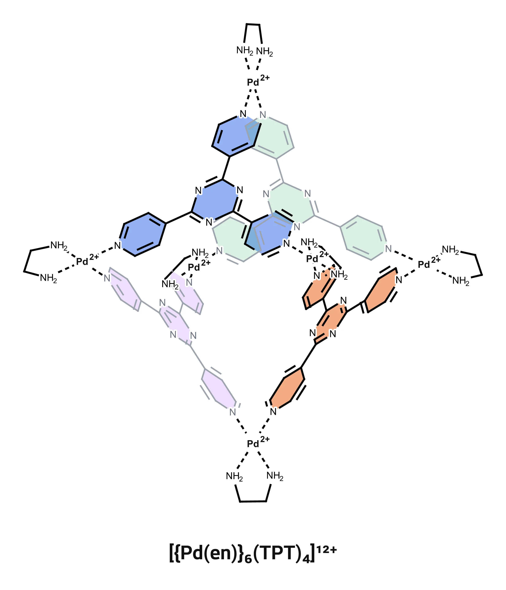
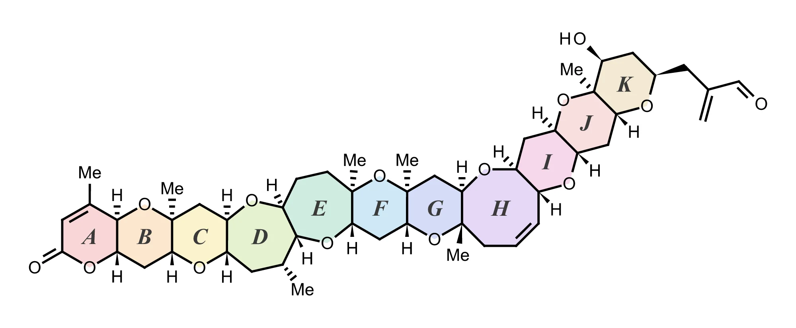
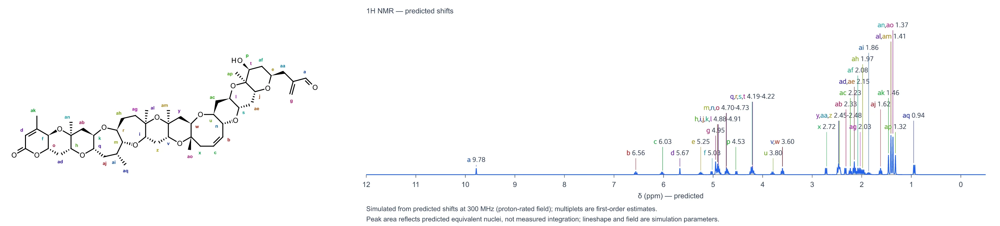
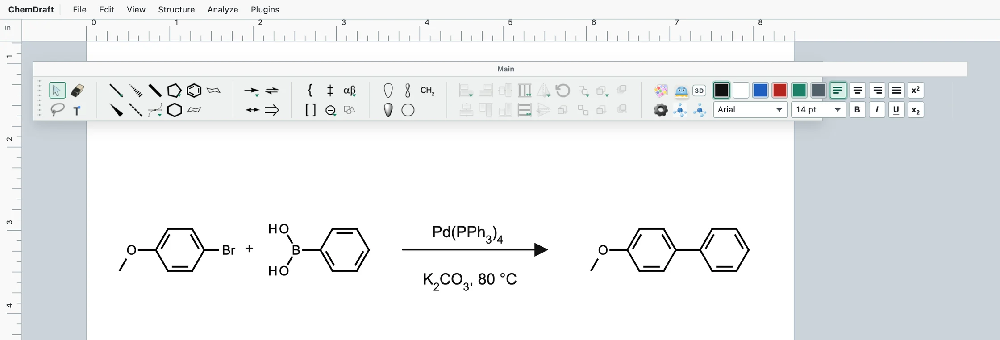
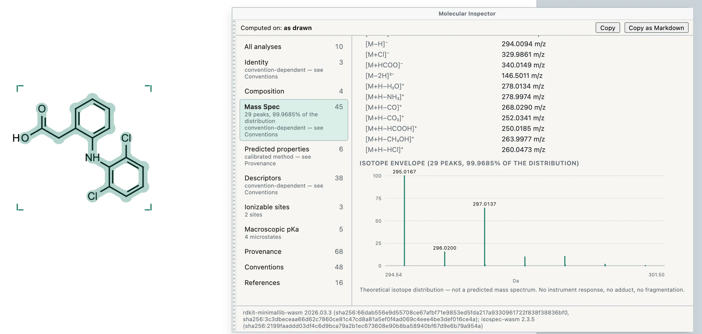
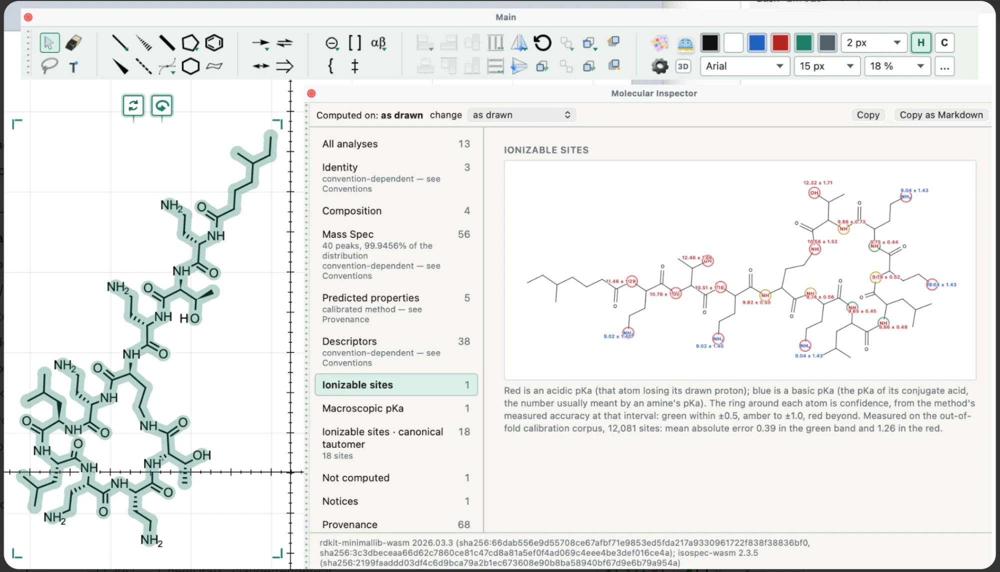
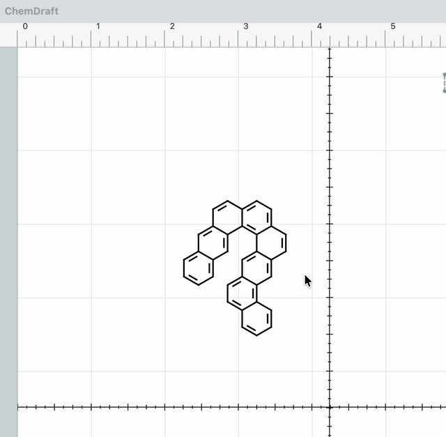

Prompt to Claude Code
draw a fujita cage structure with chemdraft


CD
A lightweight, open-source chemical drawing app for macOS and Windows. It is built around local files and a plugin architecture, with drawing, layout, export, and chemistry tools kept in clear boundaries.
β test — not an official release. Expect bugs, especially on Windows. Report them in the app: Help ▸ Report a Bug…
Assistants
ChemDraft ships a free agent skill, in the open Agent Skills format, that teaches AI assistants (Claude Code, Claude Desktop with the MCP server, and Codex) to use ChemDraft’s own tools instead of drawing molecules by hand or quoting chemistry numbers from memory.
Examples
Real prompts and the real outputs they produced. Click to enlarge.
Prompt to Claude Code
draw a fujita cage structure with chemdraft

Prompt 1
Draw brevetoxin in the K. C. Nicolaou style

Prompt 2 (follow-up)
Predict its NMR

What it can do
How it connects
A local MCP server (chemdraft-mcp) and a headless command-line tool (chemdraft) with machine-readable output. They call the same document code the desktop app uses, so the drawing an assistant makes and the one on the canvas come from one implementation. Everything runs on your computer.
Requirements. The skill, MCP server and command-line tool run from a copy of the source code, not from the downloaded app. Setup needs Git, Node 24 and pnpm 10.12.1 on macOS or Windows, plus a Java Development Kit (JDK) for name-to-structure conversion.
For example, to register the server with Claude Code (<checkout> is the folder you cloned into):
claude mcp add --scope user chemdraft -- pnpm -s --dir "<checkout>" chemdraft-mcpThese tools are part of the same beta.
Features
Every image below is the real app with real chemistry, not a mockup. The pKa screenshot and the Spin 3D recording come from the Mac app; the other two come from its browser preview build, which runs the same drawing and analysis code.

01 Draw

02 Inspect

03 Predict

04 Spin 3D
05 Open
About
ChemDraft is early software, but its desktop app already centers the drawing workspace: bonds, chains, atom labels, rings, brackets, arrows, page layout, and a selected-molecule editor. Its plugin system is there for work that does not need to become part of the drawing core.
Support
If something does not work, use Help ▸ Report a Bug… inside the app. If you open an issue on GitHub instead, include the app version, your operating system version (macOS or Windows), and the steps that reproduce it. The release page is also the place to find prior builds and notes.